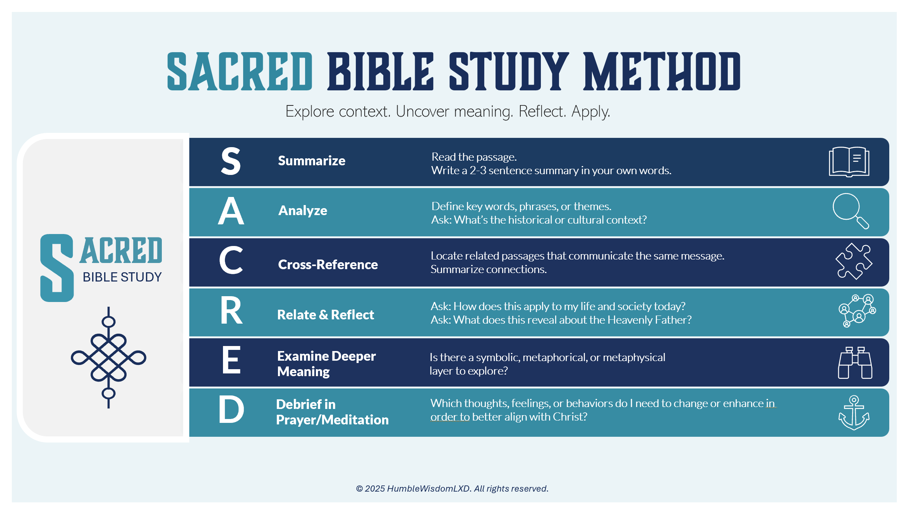

Transform Your Bible Study
SACRED is a systematic Bible study method that guides you through six essential steps for deeper scripture understanding. Whether you're studying alone or with a group, this framework helps you move beyond surface reading to meaningful spiritual growth. Click each tab for insights shared by Faith G.
Summarize ⌄
Read the passage 2-3 times and write a brief summary in your own words using 2-3 sentences.
Analyze ⌄
Dig deeper into details and background. Look up unfamiliar words and research the historical context.
Cross-Reference ⌄
Find other Bible passages that connect to your current passage. Look for similar themes and related stories.
Relate & Reflect ⌄
Connect the passage to your life today. Ask how this applies to your daily life and what it reveals about God's character.
Examine Deeper Meaning ⌄
Look beyond the surface for symbolic or spiritual meanings, metaphors, and deeper spiritual truths.
Debrief in Prayer/Meditation ⌄
Take your study into personal conversation with God. Reflect on how to apply what you've learned.
Perfect For
Individual Study
Enhance your personal devotions with structured, meaningful study
Small Groups
Guide group discussions with systematic exploration of scripture
Bible Classes
Teach others how to study scripture with this proven framework
Download Your FREE SACRED BIBLE STUDY METHOD Tool
Get both the fillable worksheet and completed example to start your SACRED Bible study journey today.
- Choose a passage - Start with 3-10 verses
- Download the worksheet - Print or complete digitally
- Set aside time - Allow 20-30 minutes for your first study
- Follow the SACRED steps - Work through each section systematically
- Apply what you learn - Let God's Word transform your daily life
Always FREE • Print or fill digitally • No email required